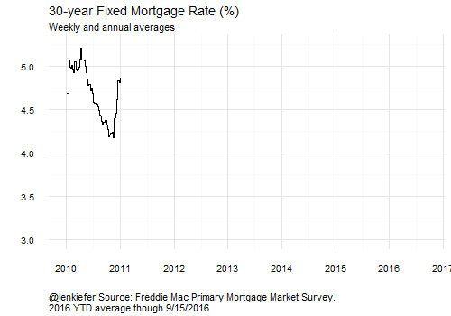

IT WAS A BUSY WEEK FOR ECONOMIC AND HOUSING DATA this week. Below are some data visaulizations I made tracking key trends in economic and housing market data.
Homeowner equity increases to $12.7 Trillion in the second quarter of 2016
With house prices rising by nearly 6 percent on a year-over-year basis, homeowners are building back equity. According to the Federal Reserve’s Flow of Funds, owners’ equity in real estate was $12.7 Trillion in the second quarter of 2016. That’s just below the maximum of $13.5 trillion in the first quarter of 2006 (not adjusted for inflation).

Dots move down
Much of the financial market news this week was dominated by the Federal Reserve Open Market Committee (FOMC), which met this week. On Wednesday they announced that they would not move their target for the Federal Funds rate. They also released their dot plot.
The dot plot is a special chart that shows the distribution of expectations of the Federal Open Market Committee (FOMC) for the federal funds rate. Specifically it captures the views of each individual FOMC member for the following:
Each shaded circle indicates the value (rounded to the nearest 1⁄8 percentage point) of an individual participant’s judgment of the midpoint of the appropriate target range for the federal funds rate or the appropriate target level for the federal funds rate at the end of the specified calendar year or over the longer run.
The graph below shows how the dots have moved since March of this year.
This post contains details on how I made an earlier version of this chart.

Reuters posted a neat interactive dotplot.
Mortgage rates on pace for lowest annual average in over 40 years
Mortgage rates remain very low. Through the 22nd of September, the 30-year fixed mortgage has averaged just under 3.6 percent in 2016. The lowest annual average in Freddie Mac’s Primary Mortgage Market Survey was 3.66 percent in 2012. If the 30-year mortgage doesn’t average over 3.8 percent for the remaining weeks of this year, 2016 will be the lowest year in the 45+ year history of the survey.

Home sales on track for best year in a decade
On Thursday the National Association of Realtors released estimates of existing home sales for the month of August. The monthly sales data was below consensus expectations, actually declining 0.9 percent from July on a Seasonally-Adjusted Annual basis. But the non-seasonally adjusted data showed a monthly increase, and a year-over-year increase. Through August existing home sales year-to-date are the highest in the past decade.